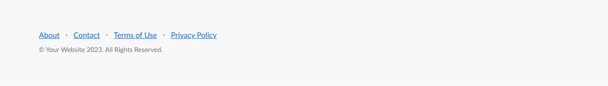
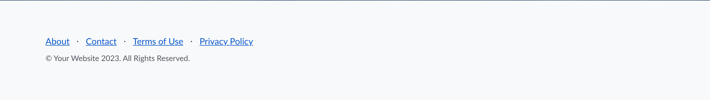
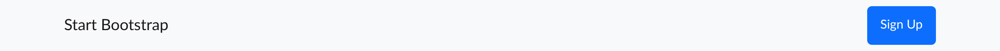
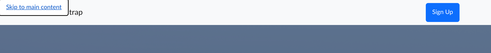

"Start Bootstrap – Landing Page" theme · fixes applied to the source then recompiled
The 14 issues from the initial audit were fixed in the Pug/SCSS source, then the project was rebuilt. The automated scan no longer reports any violation, and all 7 contrast measurements now pass the AA threshold.
| Indicator | Before | After |
|---|---|---|
| axe-core violations | 5 | 0 |
Form <label>s | 0 | 2 |
<main> landmark | absent | present |
| Skip link | absent | present |
Links with accessible name (aria-label) | 0 | 6 |
Hidden icons (aria-hidden) | 0 | 6 |
| Truly disabled buttons | 0 (class only) | 2 (attribute) |
Non-meaningful alt="..." | 3 | 0 |
Placeholder links href="#!" | 8 | 0 |
Duplicate ids | 3 | 0 |
| Heading hierarchy | h1 → h3 (skip) | h1 → h2 → h3 |
| Element | Before | After | Required |
|---|---|---|---|
| Footer links | 4.27:1 ✗ | 6.11:1 ✓ | 4.5:1 |
Copyright (.text-muted) | 4.45:1 ✗ | 6.84:1 ✓ | 4.5:1 |
| Primary button (label) | 4.50:1 | 4.50:1 | 4.5:1 |
The primary button stays exactly at the threshold (4.50:1): compliant but with no margin. Keep an eye on it if the hue changes.
input#emailAddress.form-control( type='email' placeholder='Email Address')
label.visually-hidden(for='emailAddress') Email address input#emailAddress.form-control( type='email' placeholder='Email Address' required autocomplete='email')
a(href='#!') i.bi-facebook.fs-3
a(href='#' aria-label='Facebook' rel='noopener') i.bi-facebook.fs-3(aria-hidden='true')
a → #0d6efd (4.27:1 ✗) .text-muted → #6c757d (4.45:1 ✗)
footer.footer a { color:#0a58ca; } /* 6.1:1 */
footer.footer .text-muted{ color:#515860;} /* 6.8:1 */body nav.navbar... header.masthead... section... (no <main>, no skip)
body
a.skip-link(href='#main') Skip to main content
nav.navbar...
main#main
header.masthead...
section...h1 → h3 h3 h3 → h2 h2 h2 → h2 + h5 h5 h5
h1 → h2 h2 h2 → h2 h2 h2 → h2 + h3 h3 h3
button#submitButton.btn.disabled(type='submit') Submit
button#submitButton.btn(type='submit' disabled) Submit
img(alt='...') /* read "dot dot dot" */ i.bi-window /* icon not hidden */ duplicate id (3×) href='#!' (8×) empty meta description
img(alt='') /* decorative image */ i.bi-window(aria-hidden='true') unique id (…Footer) href='#' + role/aria-label on showcase meta description filled in




An automated scan only covers part of the WCAG criteria; a screen-reader test was carried out in addition.
| Screen-reader test (VoiceOver) — full pass | ✓ Passed — displayed and announced text identical |
| Keep an eye on the primary button (4.50:1, no margin) | To monitor |
#) and adapt the lang attribute (and translate the content) to the target audience. These are content-customization points, not accessibility issues of the template itself.